The Concept
Baglio San Michele
It is not a real-estate project, nor a charming resort, nor an abstract utopia. It is a concrete and rooted attempt to rebuild, in the heart of the Iblean Sicily, a coherent, beautiful, autonomous and Christian form of life.
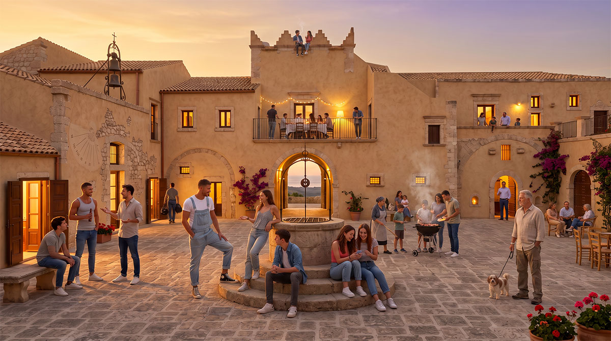
Baglio San Michele offers families real conditions of serenity, continuity and independence in an age of economic fragility, urban insecurity and cultural dissolution.
The ancient 16th-century masseria in the province of Ragusa, renamed Baglio San Michele, is an example of the fortified rural architecture typical of the Val di Noto, set in the Iblean landscape. The restoration will not be a tourist embellishment, but the recovery of a building organism according to principles of authenticity and natural climate control of Arab-Andalusian and Arab-Norman matrix.
Natural climate control
The restoration integrates historical climatic devices: a central ground-level fountain (fisqiya), a salsabil (inclined plane over which water flows), pergolas, thermal mass and principles of air capture and ventilation inspired by the badgir. The place itself communicates a message: Sicily can still host a stable, ordered and beautiful life.

Salsabil & Badgir
Inclined plane and wind-tower principles to lower the temperature of the rooms.
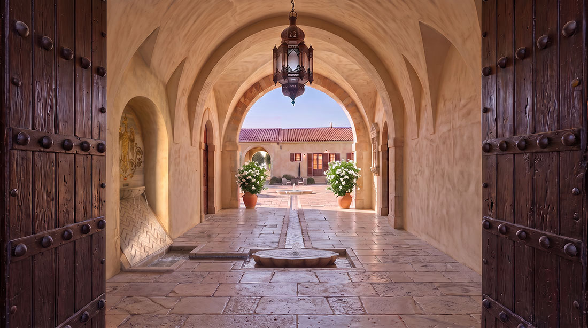
Arab-Andalusian matrix
Ground-level fountain (fisqiya), pergolas and thermal mass of the Iblean stone.
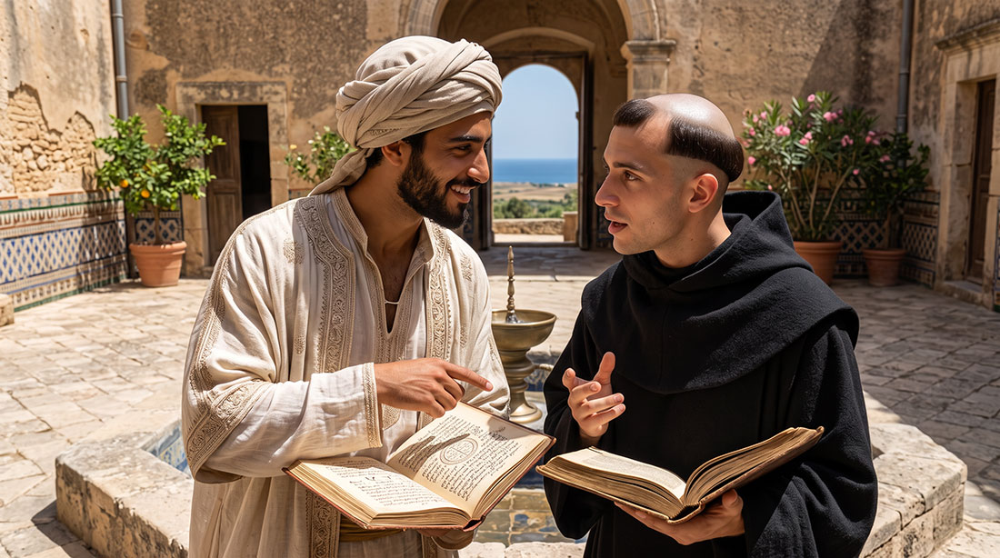
Arab-Norman continuity
Reference to the Zisa and to Mediterranean hydraulic wisdom reinterpreted in the Baglio.
The intentional community
The community that will take shape here is intentional and traditional. It is rooted in the Christian faith and in Sicilian culture, oriented towards family stability, beauty and autonomy. It defines itself as Sicilian Slow Living.
In Phase 1, 14 residential units will be created: apartments for families and cells for young singles in formation. A minority share remains destined for selective and immersive hospitality. The community is articulated in two complementary sections.
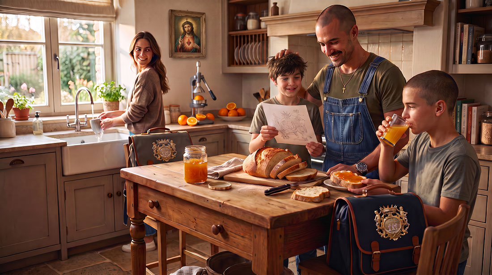
Family section
Larger and more autonomous apartments, with their own services, vegetable garden, garden and cultivable land. Common life is real, yet the privacy and autonomy of the families are guaranteed.
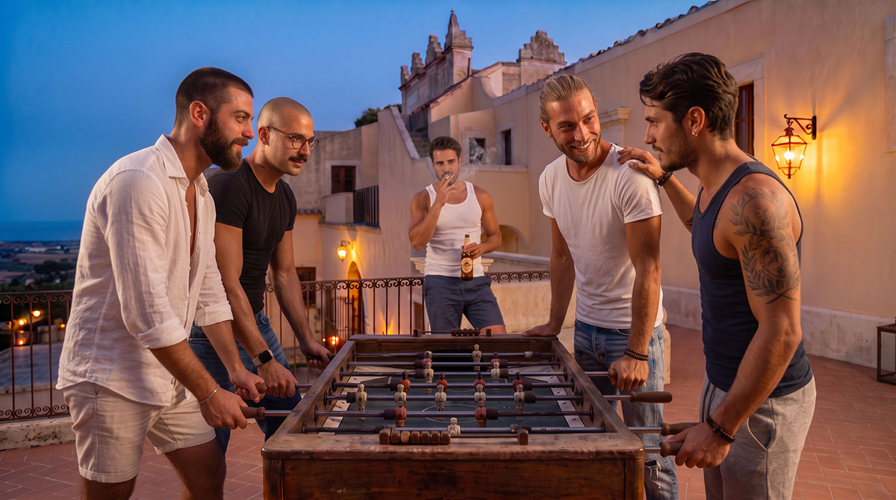
Single section
Individual cells and generous common spaces — kitchen, refectory, laundry, bathrooms, showers, sauna, gym, study rooms. Designed for young people in formation.
The guest does not consume an experience: he enters temporarily into a community that exists independently of him, with its own rhythms and its own rules.
The values that guide the project
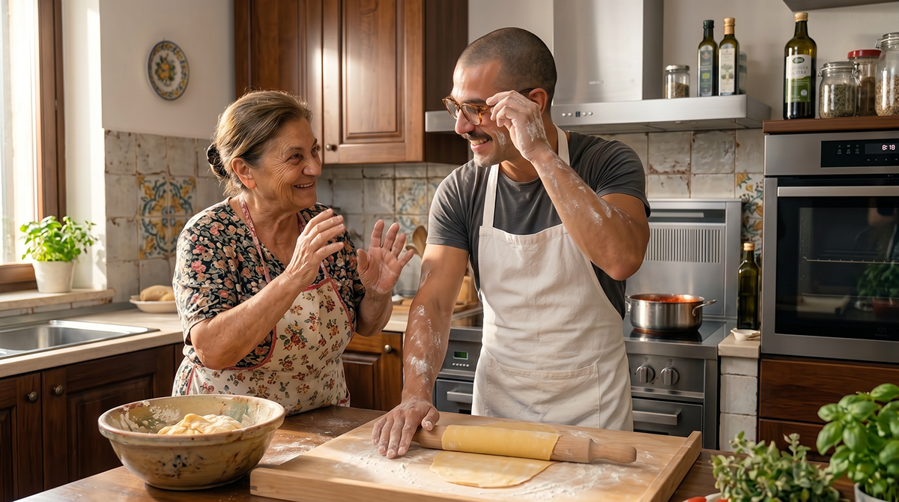
Stability and continuity
A long-term residential model in which families can grow and age together without being forced to move continuously.

Authentic relationships
A small community by choice: people truly know one another, help one another and create lasting bonds.
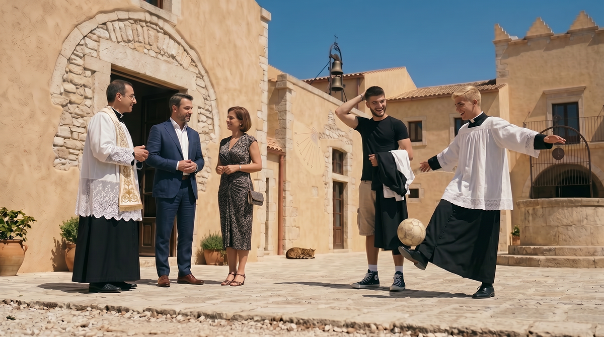
Living tradition
Sicilian cultural, artisanal and spiritual heritage as a living resource to be transmitted, not as a museum exhibit.

Shared responsibility
Balance between individual freedom and the common good. Everyone contributes according to their abilities.

Respect for the land
Food autonomy, care of the soil and responsible use of resources at the centre of the way of life.
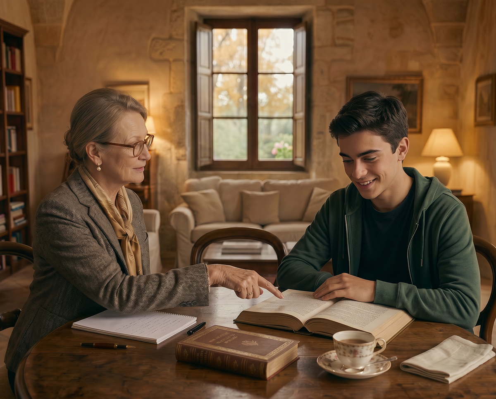
Intergenerational transmission
Children and the elderly as active members of the community: the former learn, the latter pass on knowledge and wisdom.
Why now
Urban fragility
In the great cities the cost of rents and property absorbs growing shares of income. Limited traffic zones, congestion and, in not a few neighbourhoods, real insecurity undermine daily serenity and make it harder to form a family and raise children.
Economic pressures
Artificial intelligence is compressing bands of intellectual work. Energy, competitive and demographic crises hit industry and the professions. The economic independence of families is no longer a preference: it is a condition of security.
Baglio San Michele offers a concrete alternative: dignified and stable spaces, more contained living costs, ordered and controlled environments, cultivable land and the real possibility of building a family without being continually eroded by rents, insecurity and urban wear.
Autonomy on multiple levels
The model responds by building relative autonomy: food production through permaculture and family gardens; energy systems oriented towards efficiency and storage, integrated with natural climate control; technical capacity for maintenance and production through the Archivum Artium; a mixed and selective community economy oriented towards intergenerational continuity through a permanent Living Heritage (Foundation or Trust). The goal is not isolationist autarky, but a degree of independence that reduces vulnerability.

Archivum Artium
It is the School of Arts and Crafts of the Baglio. It is not a separate academy, but a living place where hands and spirit meet to safeguard and renew Sicilian beauty.
Carpentry and cabinet-making, working of the Iblean stone, wrought iron, plaster modelling, typography and bookbinding, mosaic techniques are taught and practised. Formation takes place within the daily life of the community. The products serve the Baglio itself and can become a cultural and commercial offer of quality. It is the instrument that links material autonomy, intergenerational transmission and beauty.
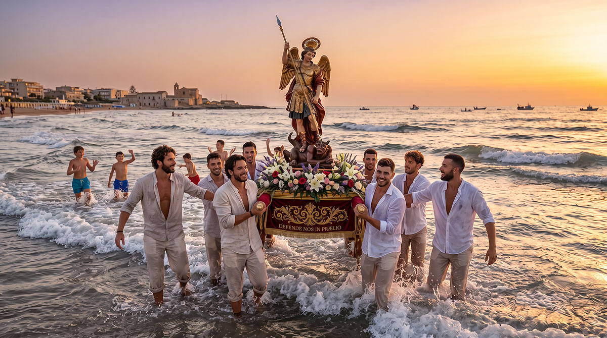
Cultural and spiritual continuity
In not a few educational, media and institutional spheres, anthropological and family visions in contrast with the Christian tradition are promoted. At the same time one witnesses a progressive marginalisation of the religious and cultural traditions that have forged European and Sicilian identity. The result is a weakening of Christian society: demographic decline, secularisation, loss of historical memory and difficulty in transmitting to children a coherent value framework.
Baglio San Michele is not a flight. It is a deliberate space of continuity: a place in which it is still possible to live according to the Christian faith and Sicilian culture, to educate one’s children without continual compromise with hostile ideologies, and to rebuild the material and cultural conditions that allow one to generate and transmit.
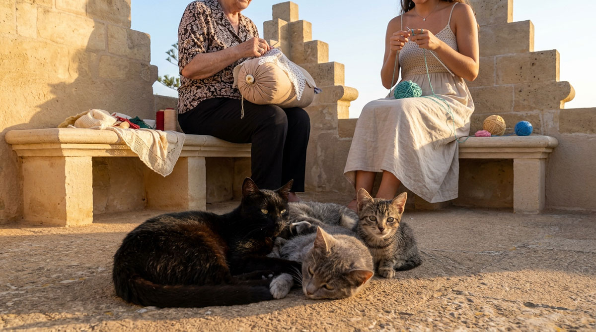
An observable social experiment
While many Western societies experience loneliness, housing precarity, family fragmentation and loss of practical knowledge, here an attempt is made to rebuild, on a reduced but complete scale, an intergenerational, rooted and ordered form of life. This makes it measurable under multiple profiles: sociology of intentional communities, anthropology of tradition, studies on social resilience, architecture and passive climate control of historical matrix, economics of cooperation, Mediterranean permaculture. It is not a theoretical model. It is a reality that can be studied, evaluated and, if successful, taught.
Long-term vision
Operational design
Surveys, technical reports and consultancy: surveyors and architects for the restoration, agronomists and permaculture designers for the land, engineers for energy rationalisation. It is the step from hypothesis to project.
The historic Baglio
14 units (family apartments + single cells), philological restoration, natural climate control, launch of the Archivum Artium.
Expansion
Other rural buildings on the masseria lands and possible recovery of the west wing. New units in Iblean stone.
Network of villages
Intentional communities replicated according to a defined protocol, maintaining local identity while sharing principles and methods.
Concrete resilience
In scenarios of economic crisis, interruption of supply chains, technological unemployment or urban social disintegration, a place of this kind offers concrete resilience: local food production, relative energy autonomy, social cohesion and mutuality, practical knowledge, a cultural and spiritual identity that holds better than uprooting. It does not claim to be an isolated ark. It proposes itself as a demonstrative nucleus of another logic: less dependence on a single external monetary income, more capacity to produce, repair, cultivate and exchange within an ordered community.
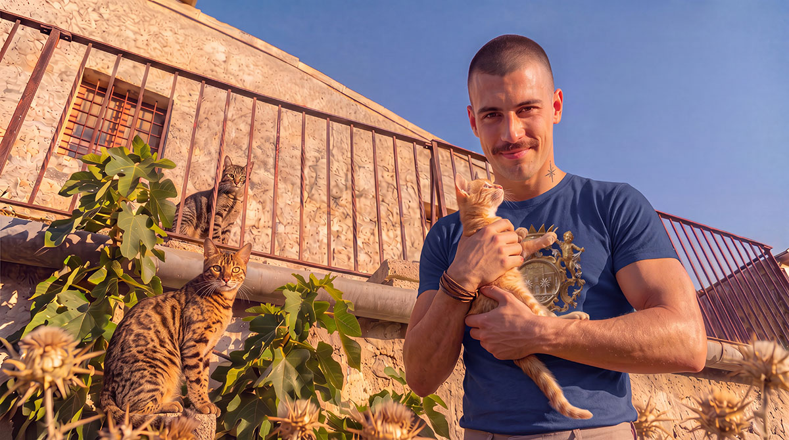
What makes it unique
Baglio San Michele unites, in a single organism, elements that usually remain separate: deep traditional rootedness, contemporary social experimentation, real material autonomy, patrimonial instruments oriented towards permanence, beauty as a non-negotiable principle, and replicability designed from the very beginning.
It is not an investment that yields and is then sold. It is an attempt to build something that remains, that forms people, that generates a model and that, if successful, can become a cultural and social reference for decades.